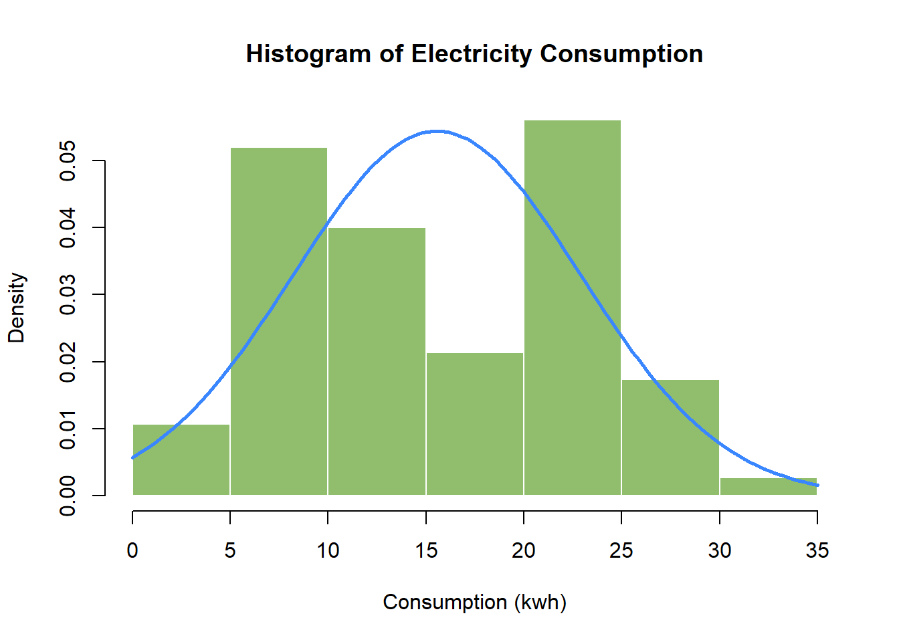
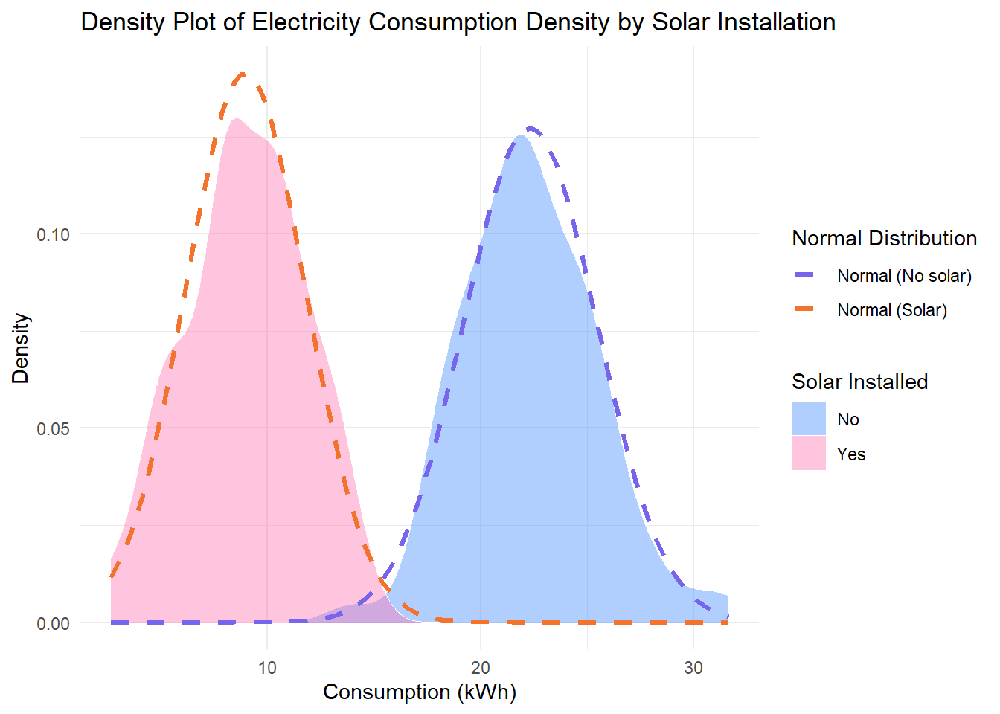
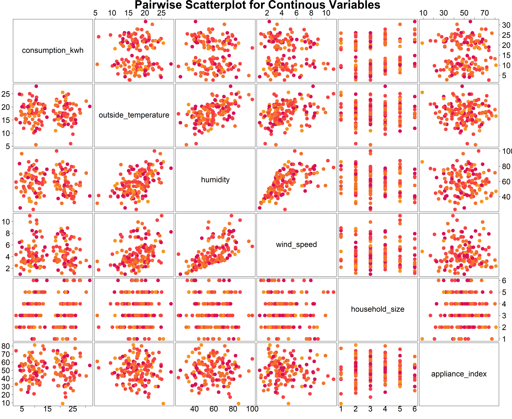
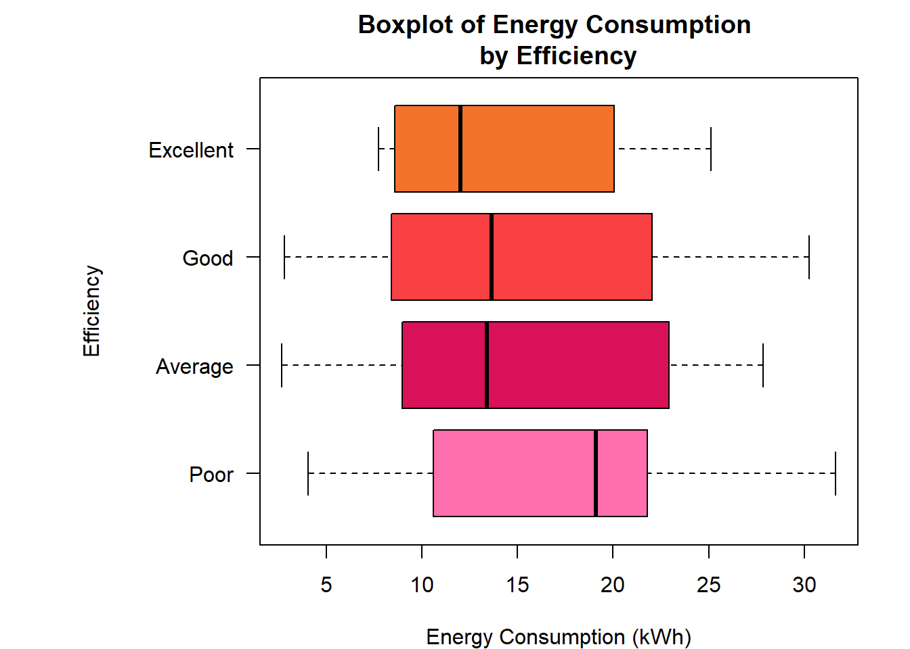
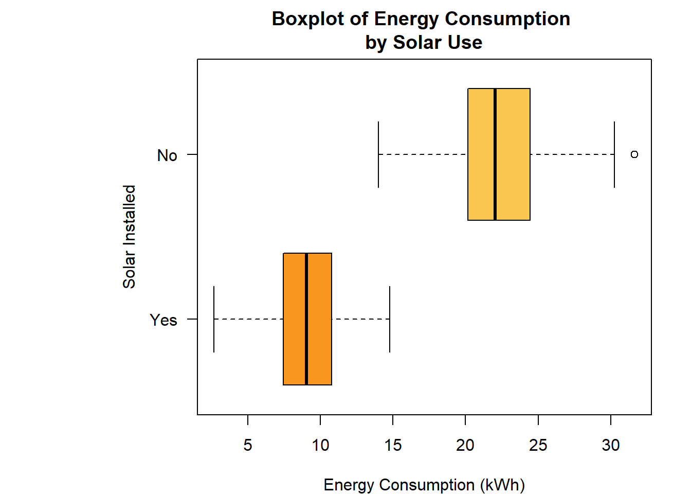
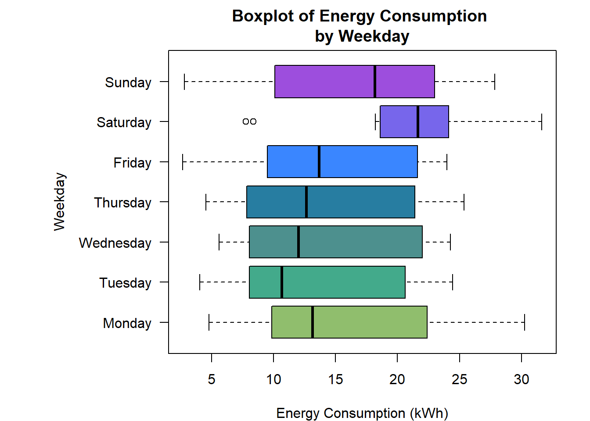
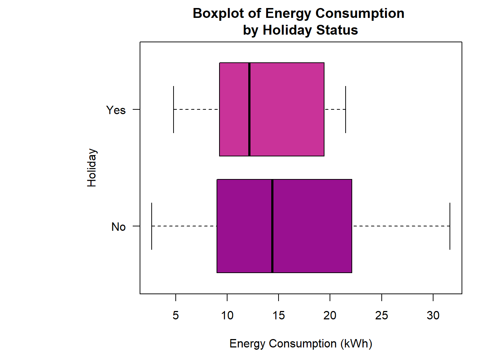
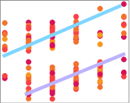
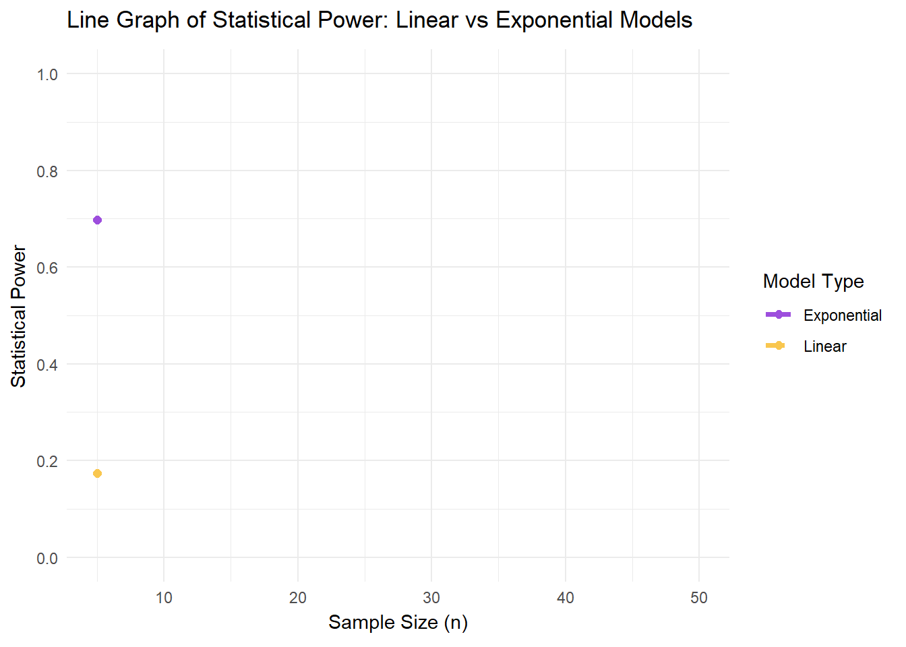
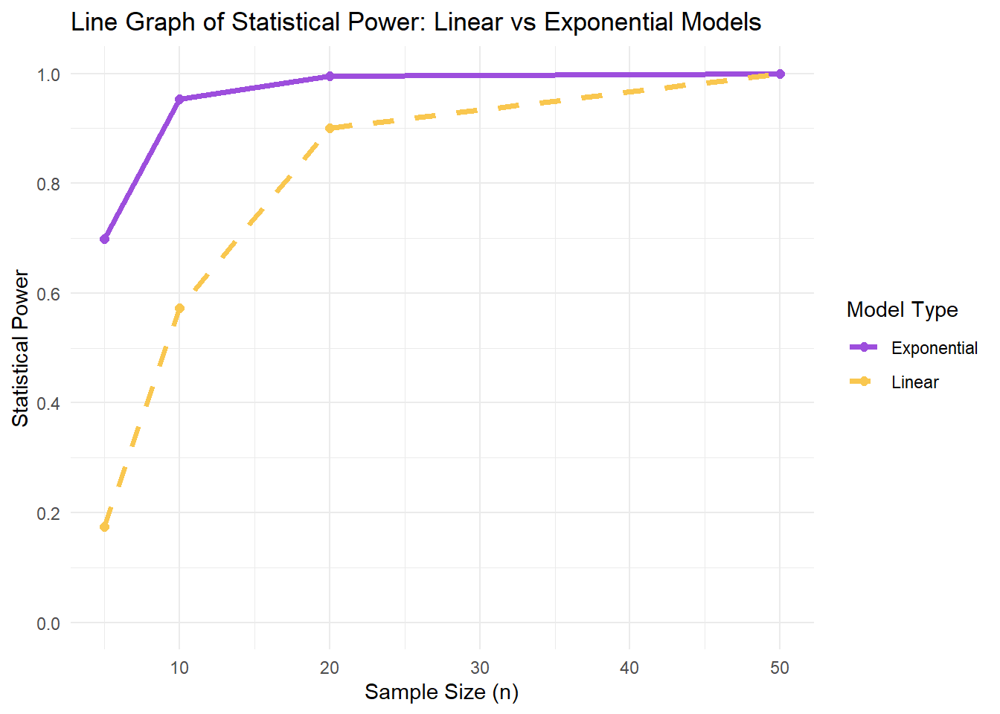

The problem being addressed is understanding what factors most influence daily household electricity consumption (kWh) in Cape Town, so that with the insights gained we can better support demand management, tariff design, and energy-efficiency interventions.
The unknown factors under investigation are: environmental conditions ( outside temperature, humidity, and wind speed), household characteristics (household size, appliance type, efficiency rating, and solar installation status), and time factors(day of the week and holiday status).
Analysis Summary:
Our analytical approach consists of thorough data exploration and visualization using a variety of inferential techniques namely:
Visualizations with density plots, pairwise plots, and categorical plots; to get a holistic understanding of all factors on electricity consumption.
Simple linear regression, to test the effect of outside temperature on electricity consumption
Single variable hypothesis testing, to test the effect of energy efficiency on electricity consumption
Multiple linear regression and Analysis of variance (ANOVA), to model the complex relationships between all predictor variables and electricity consumption
We expect household characteristic predictor variables such as household size, energy efficiency rating and solar installation status to be the strongest predictors of household electricity consumption, and for environmental and time factors to be comparatively weak predictors.
Nature of analysis:
The primary goal of the analysis is explanatory as we seek to understand and explain the relationships between the various factors and electricity consumption to inform later decision making, rather than to build a predictive model for future consumption.
Section 2: Data Exploration
Density Plots:
# Plot a histogram of consumption_kwh (freq = FALSE, if using base R) with an overlaid normal density mean_kwh <-mean(consumption_kwh, na.rm =TRUE)sd_kwh <-sd(consumption_kwh, na.rm =TRUE)hist(consumption_kwh, freq =FALSE, main ="Histogram of Electricity Consumption", xlab ="Consumption (kwh)",ylab ="Density",col = col_palette[7], border ="white" )curve(dnorm(x, mean = mean_kwh, sd = sd_kwh), col = col_palette[11], lwd =2.5, add =TRUE )

Shape:
The underlying distribution of consumption (kWh) is bimodal with two clear peaks around 7 and 22 kWh. It is fairly symmetric about these two peaks and does not display a wide spread/range. Because of the bimodality, the overlaid normal density does not align well with the data implying that the underlying overall distribution is not normal.
# Plot the density of consumption_kwh, stratified by solar_installed, with overlaid normal densities. Comment on the shape, and consider why the densities changes from the unstratified case.solar_yes <- data %>%filter(solar_installed =="Yes")solar_no <- data %>%filter(solar_installed =="No")mean_solar <-mean(solar_yes$consumption_kwh, na.rm =TRUE)mean_no_solar <-mean(solar_no$consumption_kwh, na.rm =TRUE)sd_solar <-sd(solar_yes$consumption_kwh, na.rm =TRUE)sd_no_solar <-sd(solar_no$consumption_kwh, na.rm =TRUE)ggplot(data, aes(x = consumption_kwh, fill = solar_installed)) +geom_density(color ="white", linewidth =0, alpha =0.4) +stat_function(fun = dnorm, args =list(mean = mean_solar, sd = sd_solar),aes(linetype ="Normal (Solar)"),color = col_palette[4], linewidth =1.15) +stat_function(fun = dnorm, args =list(mean = mean_no_solar, sd = sd_no_solar),aes(linetype ="Normal (No solar)"),color = col_palette[12], linewidth =1.15) +scale_fill_manual(values=c("Yes"=col_palette[1], "No"=col_palette[11])) +scale_linetype_manual(values =c(2, 2), name ="Normal Distribution") +labs(title ="Density Plot of Electricity Consumption Density by Solar Installation", x ="Consumption (kWh)", y ="Density",fill ="Solar Installed" ) +theme_minimal()

Shape:
When stratified by solar installation status, the electricity consumption distributions for households with and without solar installed closely match their respective overlaid normal densities. This implies that within these groups the observations are approximately normally distributed and reinforces the bimodality we found in the unstratified case.This implies that solar installation status has a major influence on household electricity consumption.
Pairwise Plots:
# Create pairwise scatterplots for all continuous variables, including consumption_kwhcts_variables <- data %>% dplyr::select(consumption_kwh, outside_temperature, humidity, wind_speed, household_size, appliance_index)day_numeric <-as.numeric(factor(data$day_of_week, levels =c("Monday", "Tuesday", "Wednesday", "Thursday", "Friday", "Saturday", "Sunday"), ordered =TRUE))efficiency_numeric <-as.numeric(factor(data$energy_efficiency, levels =c("Poor", "Average", "Good", "Excellent"), ordered =TRUE))solar_numeric <-as.numeric(factor(data$solar_installed, levels =c("Yes", "No"), ordered =TRUE))#_________________________________________________________________# Graphpairs(x = cts_variables, pch =19, col = col_palette[efficiency_numeric +1], main =" Pairwise Scatterplot for Continous Variables", gap =0.5,las =1, cex =3, cex.labels =3, cex.axis =3,cex.main =3 )

Categorical Variable Plots:




Categorical Relationships:
Energy Efficiency vs Solar Usage Table:
Weekdays vs Holidays Table:
Comments:
Observed Relationships:
From our density plots their is a clear difference in electricity consumption distributions between households with solar installation and without. This is the most prominent relationship - households with solar installed show lower average electricity consumption than households without.
From our Pairwise scatterplot there is a positive linear relationship between household size and electricity consumption, stratified by household use of solar power as seen below:

Figure 1: Scatterplot of Electricity Consumption by Household Size
From our boxplots the mean consumption of electricity on a weekday is lower than the mean consumption of electricity during the weekend.
From our boxplots, energy efficiency ratings have little effect on mean household electricity consumption unless the efficiency rating is “Poor”. Poorly rated households experience higher average electricity consumption.
From our pairwise scatterplots there appears to be very weak relationships between environmental factors and household electricity consumption.
Potential Collinearity:
From our pairwise scatterplot we can see that their is potential collinearity between the environmental factors since there appears to be a positive linear relationship between temperature-and-humidity as well as humidity-and-windspeed. This is to be expected as weather conditions often co-vary.
From our tables there appears to be potential collinearity between energy efficiency and solar installation, with poor efficiency being associated with no solar usage, but not majorly so as other ranks of efficiency show no clear relationship with solar usage.
Outliers:
There are no outlying observations of note.
Section 3: Simple Linear Regression
Model Fitting:
# From first principles (manual calculation), fit a simple linear regression of consumption_kwh on outside_temperature#1) design matrixX <-cbind(1, outside_temperature)Y <- consumption_kwhk <-ncol(X)n <-nrow(X)p <- k-1#2) finding regression coefficientsB_hat <-solve(t(X)%*%X)%*%t(X)%*%YB0_hat <- B_hat[1]B1_hat <- B_hat[2]#3) calculating residuals and varianceY_hat <- X %*% B_hate <- Y - Y_hatSSE <-t(e) %*% eSST <-sum((Y-mean(Y))^2)s_squared <-as.numeric(SSE/(n-k))#4) calculating Standard Errorscov_mat_B <- s_squared *solve(t(X)%*%X)se_B <-sqrt(diag(cov_mat_B))se_B0 <- se_B[1]se_B1 <- se_B[2]#5) t,f & p - valuest_B0 <- B0_hat/se_B0t_B1 <- B1_hat/se_B1p_B0 <-2*pt(abs(t_B0), df = n - k, lower.tail =FALSE)p_B1 <-2*pt(abs(t_B1), df = n - k, lower.tail =FALSE)F_stat <- ((SST-SSE)/(k-1)) / s_squaredp_F <-pf(F_stat, df1 = k -1, df2 = n - k, lower.tail =FALSE)#5) multiple R squared and R-adjustedR_squared <-1- (SSE/SST)R_adj <-1-(1-R_squared)*((n-1)/(n-k))
Alternative Hypothesis: \[H_{1}: \text{At least one of } (\beta_{Poor}, \beta_{Average}, \beta_{Good}, \beta_{Excellent}) \neq 0\] Test-statistic: \[F_{stat} = 0.344 \] p-value: \[p_{value} = 0.7934 > 0.05 \] Conclusion: \[\text{At the } \alpha = 0.05 \text{ significance level, we fail to reject } H_{0}.\]\[\text{Because there is no significant overall effect of energy efficiency} \]\[\text{on energy consumption } (p_{value} > 0.05).\]
Section 4: Multiple Linear Regression
Fit Model:
# Fit a multiple linear regression including all explanatory variables. Include an interaction term between outside_temperature and humidity.fit <-lm(consumption_kwh ~ outside_temperature + humidity + wind_speed + household_size + appliance_index + energy_efficiency + solar_installed + day_of_week + holiday + outside_temperature:humidity, data = data)# Construct and display a table of coefficients with 95% confidence intervals and p-values.confint_fit <-confint(fit, level =0.95)fit_summary <-summary(fit)table_coefficients <- fit_summary$coefficientstable_final <-cbind(table_coefficients[,c( "Pr(>|t|)")], confint_fit)colnames(table_final) <-c( "p-value", "CI:97.5%", "CI:2.5%")print(table_final, digits =3)
\[H_{1}: \text{At least one of } (\beta_{temperature}, \beta_{temp:humidity}) \neq 0\]\[F_{stat} = 1.002 \]\[p_{value} = 0.3698 > 0.05 \]\[\text{At the } \alpha = 0.05 \text{ significance level, we fail to reject } H_{0}.\]\[\text{Because there is no significant overall effect of outside temperature} \]\[\text{on energy consumption } (p_{value} > 0.05).\] ———————————————————————————————————————— \[H_{0}: \beta_{humidity} = \beta_{temp:humidity} = 0\]
\[H_{1}: \text{At least one of } (\beta_{humidity}, \beta_{temp:humidity}) \neq 0\]\[F_{stat} = 2.218 \]\[p_{value} = 0.1129 > 0.05 \]\[\text{At the } \alpha = 0.05 \text{ significance level, we fail to reject } H_{0}.\]\[\text{Because there is no significant overall effect of humidity} \]\[\text{on energy consumption } (p_{value} > 0.05).\] ———————————————————————————————————————— \[H_{0}: \beta_{solar} = \beta_{no solar} = 0\]
\[H_{1}: \text{At least one of } (\beta_{solar}, \beta_{no solar}) \neq 0\]\[F_{stat} = 476.838 \]\[p_{value} = 3.996357e-61 < 0.05 \]\[\text{At the } \alpha = 0.05 \text{ significance level, we reject } H_{0} \text{ in favor of } H_{1}.\]\[\text{Because there is a significant overall effect of solar usage} \]\[\text{on energy consumption } (p_{value} < 0.05).\]
From the tabulated results there is a clear monotonic, increasing relationship between the effect size (\(\beta1_{A}\)) and estimated statistical power (the probability of correctly rejecting a false null hypothesis, \(1-\beta\)).
Notably:
There is a low estimated statistical power at small effect sizes. At \(\beta_{1}\) = 0.5, the estimated power is incredibly small at 4.5% which indicates a very high risk of a Type 2 error when test for small effect sizes.
There is a high estimated statistical power at large effect sizes.At \(\beta_{1}\) = 5, the estimated power of the test is 77.7% and reaches 100% at \(\beta_{1}\) = 10, indicating a very low risk of a Type 2 error when testing for large effect sizes
Changes in the generative seed used changes the power results but not the overall observed trend.
n_B model power
1 5 Linear 0.174
2 5 Exponential 0.698
3 10 Linear 0.573
4 10 Exponential 0.953
5 20 Linear 0.901
6 20 Exponential 0.995
7 50 Linear 1.000
8 50 Exponential 1.000


Comments:
From the graphs and the tabulated results there is a clear monotonic increasing relationship between the sample size \(n\) and the estimated statistical power (\(1- \beta\)). The concave downwards curve of the graph shows underlying logarithmic growth, tending towards an asymptote of \(\beta = 1\). This is true for both the linear and exponential model.
Notably:
The exponential model produces consistently better (higher) estimated statistical power than the linear model, irrespective of \(n\). This is because the linear model is mis-specified whilst the exponential model is a correct/ accurate representation of the effective of \(n\) on estimated statistical power. This difference is clearest for small \(n\).
There is a low estimated statistical power for small \(n\). At \(n\) = 5, the estimated power is very small at 17.4% for the linear model and moderate at 69.8% for the exponential model. This indicates a moderate to high risk of a Type 2 error when test for small \(n\).
There is a high estimated statistical power at for large \(n\). At \(n\) = 20, the estimated power of the test is very high at 90.1% for the linear model and 99.5% for the exponential model, reaching 100% at \(n\) = 50 for both models. This indicates an incredibly low risk of a Type 2 error when testing for large \(n\).
Conclusion & design insight:
In Scenario A:
Estimated power increases as effect size increases for a fixed sample size, \(n = 25\). This means there is a clear monotonic, increasing relationship between the effect size (\(\beta1_{A}\)) and estimated statistical power. From the results of scenario B, this sample size \(n = 25\) is sufficiently large for us to ignore the effects of sample size on estimated power (At \(n\) = 20: \((1-\beta)_{linear}\) = 90.1%, \((1-\beta)_{exponential}\) = 99.5% ). This implies that effect size is very influential on the power of a test.
In Scenario B:
Estimated power increases as sample size increases in both linear an exponential models for a fixed effect size, \(\beta_{1} = 0.01\). This means there is a clear monotonic increasing relationship between the sample size \(n\) and the estimated statistical power, but since effect size is fixed we can’t evaluate its influence in this scenario. Both the mis-specified linear model and exponential model follow a concave growth pattern reaching \((1-\beta) = 1\) however the exponential model consistently outperforms the linear model for all \(n\).
Lowest power yield:
Scenario A yields the lowest overall power, specifically for small effect sizes (\(\beta_{1}\) = 0.5 \(\implies (1-\beta)\) = 4.5%).
This is because with a fixed moderate sample size \(n\) = 25, very small effect sizes are difficult to detect resulting in a low estimated power and high risk of Type 2 errors in testing.In contrast, Scenario B can achieve higher power by increasing \(n\), even for small effect sizes on top of considering the differences between the linear and exponential models (At \(n\) = 5 and \(\beta_{1} = 0.01\) : \((1-\beta)_{linear}\) = 17.4%, \((1-\beta)_{exponential}\) = 69.8% .
Design decisions: The simulations usefully demonstrate that estimated power increases with both effect size (\(\beta_{1}\)) and sample size (\(n\)). On top of this using the correctly specified model greatly improves the power of our tests. This shows that understanding the underlying relationship between our predictor and response variables is fundamental to upholding linear regression assumptions.
Comments:
Observed Relationships:
From our density plots their is a clear difference in electricity consumption distributions between households with solar installation and without. This is the most prominent relationship - households with solar installed show lower average electricity consumption than households without.
From our Pairwise scatterplot there is a positive linear relationship between household size and electricity consumption, stratified by household use of solar power as seen below:
From our boxplots the mean consumption of electricity on a weekday is lower than the mean consumption of electricity during the weekend.
From our boxplots, energy efficiency ratings have little effect on mean household electricity consumption unless the efficiency rating is “Poor”. Poorly rated households experience higher average electricity consumption.
From our pairwise scatterplots there appears to be very weak relationships between environmental factors and household electricity consumption.
Potential Collinearity:
From our pairwise scatterplot we can see that their is potential collinearity between the environmental factors since there appears to be a positive linear relationship between temperature-and-humidity as well as humidity-and-windspeed. This is to be expected as weather conditions often co-vary.
From our tables there appears to be potential collinearity between energy efficiency and solar installation, with poor efficiency being associated with no solar usage, but not majorly so as other ranks of efficiency show no clear relationship with solar usage.
Outliers:
There are no outlying observations of note.